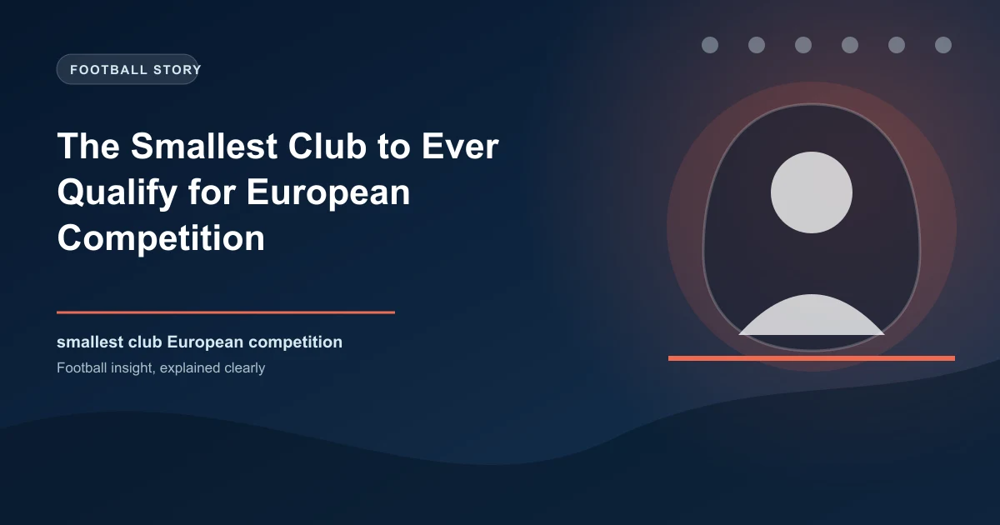

There is no single answer to the question "what is the smallest club to ever qualify for European competition?" because the definition of "small" depends on what you measure. Population of the town? Capacity of the stadium? Annual budget? Number of registered supporters? Depending on the metric, the answer shifts between a Faroese island club, a Luxembourg village side, and a part-time Welsh team whose average attendance would fit inside a single stand at Old Trafford.
What unites them is the scale of the gap they had to bridge. These are clubs from towns so small that their local derby involves a bus ride to the next valley. And yet, somehow, they found themselves standing in a tunnel next to multimillionaire professionals from clubs with 100 times their budget, playing in stadiums that dwarf their entire hometown.
Before we crown the smallest, we need a framework. A club from Andorra or San Marino might technically be from a microstate, but their population base is still in the tens of thousands. A truly small club is one where the entire local population could fit into a single section of the Camp Nou. The candidates include:
Each of these clubs reached the qualifying rounds of a UEFA competition. But one of them stands above the rest.
In the summer of 2023, K� Klaksvik did something no Faroese club had ever done: they reached the group stage of a European competition. The Europa Conference League draw placed them alongside Lille, Slovan Bratislava, and Olimpija Ljubljana — clubs from nations with 20 times the population base of the Faroe Islands. How they got there is one of the most improbable stories in modern football.
Klaksvik is a fishing town on the island of Bor�oy in the Faroe Islands. It has a population of roughly 5,000 people. The club's home ground, Vi� Dj�pum�rar, holds 1,800 spectators — far below UEFA's minimum standard for group-stage matches. When K� qualified, they were forced to play their "home" group-stage matches 30 miles away in T�rshavn, the capital. The stadium they used, T�rsv�llur, is itself a modest ground holding 7,000. It was the largest venue in the country.
K�'s journey began in the Champions League qualifying rounds. In the first qualifying round, they faced Ferencv�ros, the Hungarian champions and a club with a budget larger than the entire Faroese league combined. K� lost the first leg 1-0 at home. Nobody thought much of it. Then, in Budapest, they produced the result of the year: a 3-0 victory against Ferencv�ros in the Groupama Ar�na, a stadium that holds 22,000 people. K� won the tie 3-1 on aggregate. The Hungarian champions were out, beaten by a team of part-time fishermen and schoolteachers.
They faced BK H�cken of Sweden in the second qualifying round and won again, this time on penalties. By the time Molde knocked them out in the Champions League third qualifying round, K� had already secured passage to the Europa League playoff. They lost to Sheriff Tiraspol but dropped into the Conference League group stage anyway. The fairytale was complete.
| Round | Opponent | Result |
|---|---|---|
| UCL Q1 | Ferencv�ros (HUN) | 3-1 agg. — won 3-0 in Budapest |
| UCL Q2 | BK H�cken (SWE) | 3-3 agg. — won on penalties |
| UCL Q3 | Molde (NOR) | 2-3 agg. |
| UEL Playoff | Sheriff Tiraspol (MDA) | 2-3 agg. |
The sight of their players walking out under the floodlights of T�rsv�llur, with the North Atlantic wind howling and a population's worth of supporters crammed into the stands, remains one of the most genuinely romantic images of modern European football. They finished bottom of their group with one point from six matches. But the point was the point. They had existed in the same competition as clubs from five different countries and nobody could take that away.
If K� Klaksvik represents the smallest town to produce a group-stage qualifier, the title of smallest settlement to produce any European qualifier at all belongs to K�erj�ng 97. The club comes from the village of Bascharage in southwestern Luxembourg, which has a population of just over 1,000 people. The club's stadium in Niederkorn holds 1,300. It is the kind of ground where you can stand on one side and identify individual spectators on the other.
In the 2007-08 season, K�erj�ng 97 won the Luxembourg Cup, earning a spot in the UEFA Cup first qualifying round. The village club was drawn against Lillestr�m of Norway — a professional team from a club with a 108-year history and multiple league titles. K�erj�ng won the first leg 1-0 at home in a stadium that was barely more than a pitch with stands attached. The return leg in Norway ended 1-1. Aggregate: 2-1 to the village. The next round paired them with Bordeaux — the French giants featuring a young Matthieu Chamakh, future World Cup winner Alou Diarra, and a budget that could buy the entire Luxembourg league. K�erj�ng lost 7-1 on aggregate. But it did not matter. For two rounds of European football, a village of 1,000 people had a team in a continental competition.
Haverfordwest County AFC, founded in 1899, represents the town of Haverfordwest in Pembrokeshire, Wales. The town has a population of approximately 12,000. The club is part-time: most of its players have day jobs. In 2023, they won the Cymru Premier European playoff and qualified for the Europa Conference League first qualifying round. Their average attendance that season was around 400 people.
What followed was the definition of a cup tie. Haverfordwest faced B36 T�rshavn from the Faroe Islands — a match between two clubs from tiny nations, each seeing the other as the biggest game of their season. The Welsh side won 2-1 on aggregate and advanced to face Bnei Yehuda of Israel, a club from Tel Aviv with a professional setup. Haverfordwest lost on penalties in the second round, but they had played three European matches, won a tie, and brought European football to a corner of Wales that had never seen it before.
For micro-clubs, European qualification is not about the money. K� Klaksvik earned roughly �3.5 million from their 2023 run — a life-changing sum for a Faroese club but pocket change for the teams they faced. What it provides is infrastructure, visibility, and proof of concept. K� used their earnings to upgrade their youth academy and install artificial turf. Haverfordwest used their European run to attract sponsorship and grow their supporter base. K�erj�ng 97's run remains the defining achievement in the club's history two decades later.
There is also a deeper, less tangible significance. When K� Klaksvik walked out against Ferencv�ros in Budapest, they carried with them the identity of a nation of 50,000 people. The Faroe Islands do not have a national team at a major tournament — they have never qualified for a World Cup or European Championship. But their club side reached a group stage, and for three months in the autumn of 2023, the Faroe Islands had a team in Europe. That matters in ways that cannot be measured by coefficient points or prize money.
For bettors, micro-clubs in European competitions present a unique opportunity. Bookmakers consistently underestimate teams from smaller leagues, especially in early qualifying rounds. In July and August, when Champions League and Europa Conference League qualifiers begin, teams from the Faroe Islands, Luxembourg, Malta, and Andorra are routinely priced as if they have no chance. The data tells a different story. In 2023, K� Klaksvik at odds of 9.00 to beat Ferencv�ros in Budapest represented enormous value for anyone who had done their research. Haverfordwest at 4.50 to beat B36 T�rshavn was similarly mispriced. The market undervalues these clubs because the market does not follow them.
The strategy is simple: during early qualifying rounds, look for domestic champions from micro-leagues facing struggling sides from mid-tier European leagues. Faroese champions are often sharper (their season runs through the summer), while clubs from larger leagues are still in preseason. Monitor team news. Small clubs tend to announce injuries far less than big clubs, which creates a knowledge advantage for the diligent bettor. And always check the venue — a club that plays on artificial turf in the Faroe Islands and faces a side from a nation that plays on grass suddenly becomes a much tougher opponent at home. Value betting is about finding mispriced odds, and few markets are as consistently mispriced as European minnows in July.
Get free football predictions for every qualifying round. Spot the undervalued minnows before the odds shift.
Generate optimized accumulator combinations from today's AI-powered predictions. Set your target odds and get instant ticket suggestions.
Free Ticket Builder →